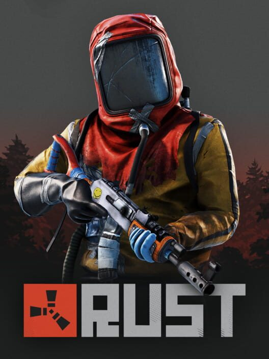
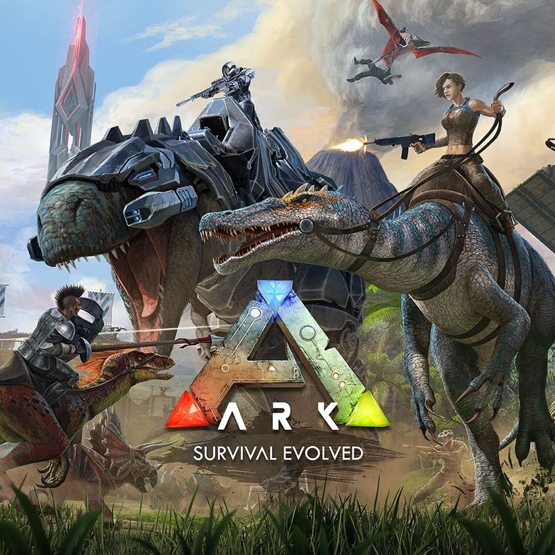

Rust
Rust es un videojuego de supervivencia multijugador desarrollado por Facepunch Studios. Lanzado en acceso anticipado en 2013, el juego se centra en la supervivencia en un mundo abierto post-apocalíptico, donde los jugadores deben recolectar recursos, construir refugios y defenderse de otros jugadores y criaturas salvajes. Rust es conocido por su jugabilidad intensa y su enfoque en la interacción social entre jugadores.

Ark: Survival Evolved
Ark: Survival Evolved es un videojuego de supervivencia desarrollado por Studio Wildcard. Lanzado en 2017, el juego se desarrolla en una isla llena de dinosaurios y otras criaturas prehistóricas, donde los jugadores deben recolectar recursos, construir estructuras y domesticar animales para sobrevivir. Ark combina elementos de exploración, construcción y combate en un mundo abierto y dinámico.